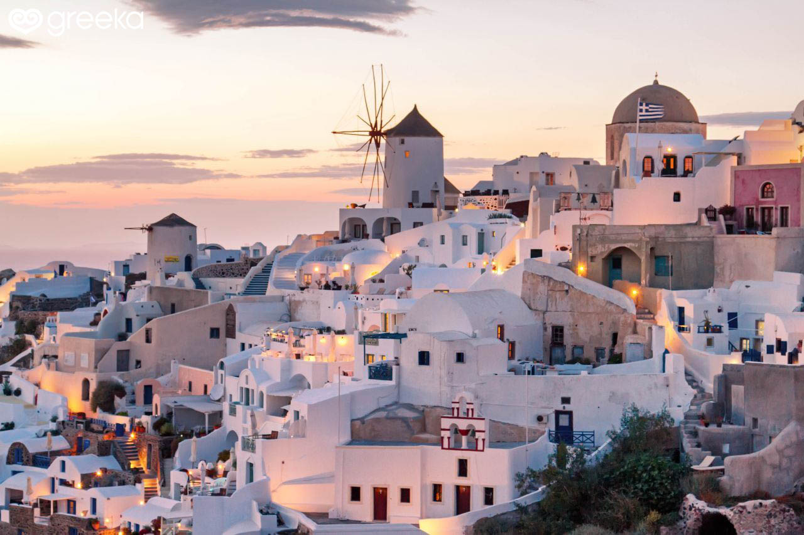
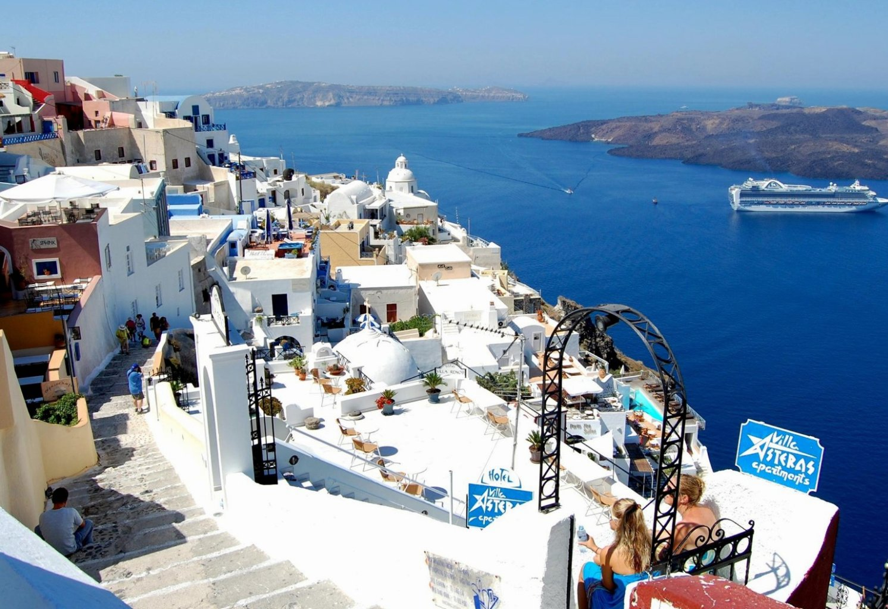
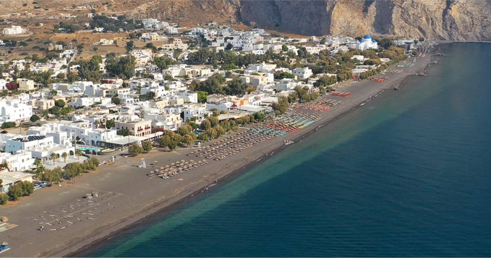
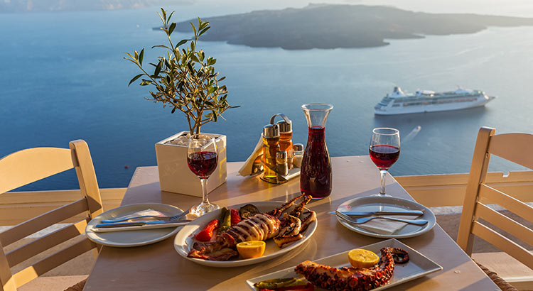
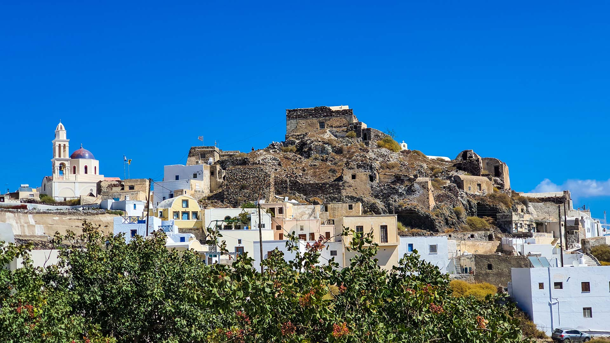
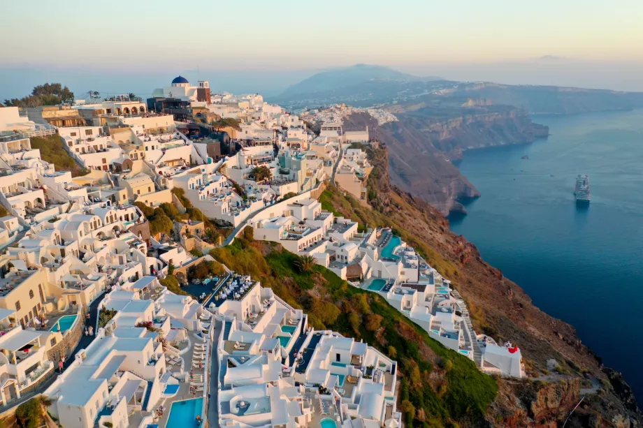

Oía
A világ leghíresebb naplementéje
Minden este ezrek gyűlnek össze Oía erődjénél. Érdemes egy órával korábban érkezni a legjobb helyért!
Görögország · 2024. augusztus
Tíz nap a kalderán — fehér falak, kék kupolák és az Égei-tenger végtelenje.
Szantorini — görögül Θήρα, Thíra — Görögország legismertebb szigete. A vulkáni kaldera fölé épülő Oía és Firá városai olyan látványt nyújtanak, amelyet egyszer mindenkinek látnia kell.
2024 augusztusában tíz napot töltöttem a szigeten: felfedeztem a fekete vulkáni strandokat, kóstoltam a helyi assyrtico fehérbort, és néztem az Égei-tenger fölé bukó naplementét.
Ez az oldal az élmények, a látnivalók és a praktikus tapasztalatok gyűjteménye mindenkinek, aki hasonló kalandba vágna.
10
nap a szigeten
3
village felfedezve
5
strand meglátogatva
∞
felejthetetlen pillanat
„A kaldera felett ülve, az esti szélben — megértettem, miért mondják, hogy Szantorini megváltoztatja az embert."
— 2024

Oía
Minden este ezrek gyűlnek össze Oía erődjénél. Érdemes egy órával korábban érkezni a legjobb helyért!

Firá
Múzeumok, éttermek és a kaldera szélén futó sétány. A kábeldurrantó levisz a kikötőbe.

Perissa
A vulkáni fekete homok gyönyörű kontrasztot alkot a türkizkék vízzel. Vigyázz: nagyon felmelegszik nyáron!

Gasztronómia
Az assyrtico fehérbor és a friss tenger gyümölcsei legalább annyira emlékezetesek, mint a táj.

Akrotíri
A Minószi korból fennmaradt romvárost sokan az Atlantisz legendájával hozzák összefüggésbe. Belépő ~12 €.

Imerovigli
Kevesebb turista, ugyanolyan panoráma. A caldera-sétányon gyalog is el lehet jutni Oíáig.